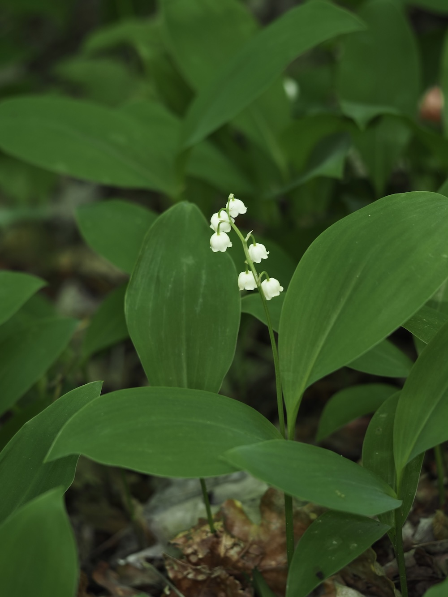

Alles giftig — ein Bissen kann lebensgefährlich sein
Maiglöckchen sehen so unschuldig aus, dass viele die Gefahr unterschätzen. Tatsächlich gehören sie zu den giftigsten heimischen Pflanzen: Bereits wenige Beeren oder Blätter können bei Kindern zu Herzrhythmusstörungen und schweren Vergiftungen führen. Die Wirkstoffe (Convallatoxin und Verwandte) sind in allen Teilen — Blütenstiel, Blättern, Beeren — vorhanden. Also: bewundern, aber NICHT anfassen lassen von kleinen Kindern.
Vorsicht im Frühling
Die größte Vergiftungsgefahr besteht im Frühjahr: Die jungen Maiglöckchen-Blätter sehen Bärlauch-Blättern fast zum Verwechseln ähnlich. Erst beim Geruchstest fällt der Unterschied auf: Bärlauch riecht knoblauchartig, Maiglöckchen praktisch nicht. Wenn unsicher: NICHT pflücken. Jahr für Jahr gibt es Bärlauch-Verwechslungen mit teils tödlichem Ausgang.